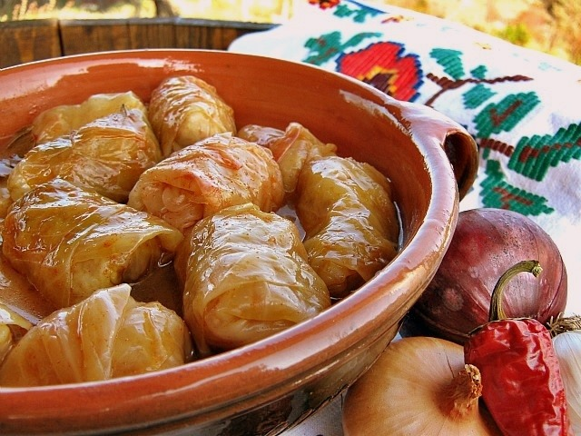

Sarma
Sarma is one of the most cherished traditional Serbian dishes, often served at celebrations and family dinners.
These cabbage rolls are filled with a savory mix of minced meat and rice, wrapped in tangy pickled cabbage
leaves, then slow-cooked
in a rich tomato sauce with optional smoked meat for extra depth. The result is a hearty, comforting meal with
layers of
flavor that get even better the next day. A true symbol of Balkan home cooking!

Ingredients:
- 500g ground pork (or mix with beef)
- 1 cup rice
- 1 onion (finely chopped)
- 1 egg
- 1 tsp of paprika
- Salt and pepper to taste
- 1 jar of pickled cabbage leaves
- 200g smoked meat or bacon (optional)
- 500ml tomato juice or passata
Instructions:
- In a bowl, mix ground meat, rice, onion, egg, paprika, salt, and pepper.
- Place a spoonful of filling on each cabbage leaf and roll tightly, folding in the sides.
- In a pot, layer sarma rolls with pieces of smoked meat in between.
- Pour tomato juice over the rolls until mostly covered.
- Cover and simmer on low heat for 2–3 hours.
Serve with: mashed potatoes or crusty bread.
Home